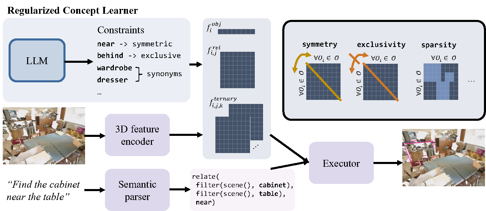
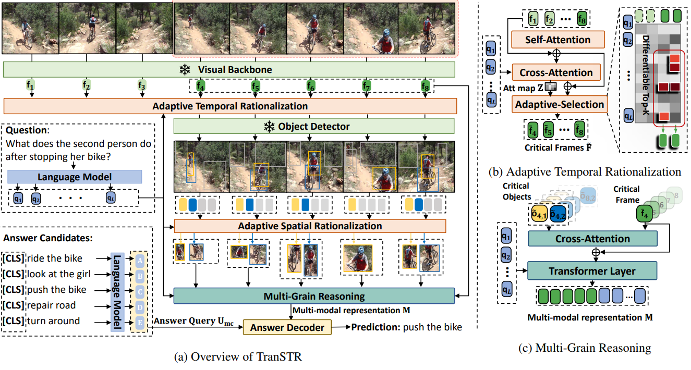
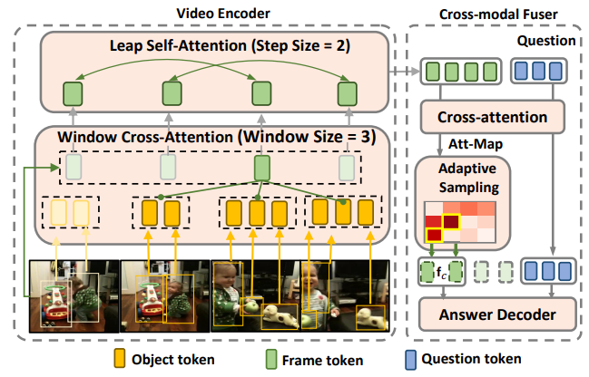

|
I am a senior undergraduate student in the School of Information Science and Technology at the University of Science and Technology of China. Last summer, I was a summer intern working with Prof. Jiajun Wu at Stanford University on 3D object grounding. We tried to minimize human supervision and leverage commonsense knowledge to guide reasoning. I am also fortunate to work with Prof. Tat-Seng Chua at the National University of Singapore on vision and language. |

|
|
I'm broadly interested in video and 3D vision, with the goal of making the agents perceive the physical world and reason based on its perception. I'm also excited to explore other interesting topics (especially generative models). |
|  |
Chun Feng*, Joy Hsu*, Weiyu Liu, Jiajun Wu Under review PDF / code We propose TranSTR that features a spatio-temporal rationalization (STR) module together with a more reasonable candidate answer modeling strategy. The answer modeling strategy is independently verified to be effective in boosting other existing VideoQA models. |
|  |
Yicong Li, Junbin Xiao, Chun Feng, Xiang Wang, Tat-Seng Chua ICCV 2023 arXiv / code We propose TranSTR that features a spatio-temporal rationalization (STR) module together with a more reasonable candidate answer modeling strategy. The answer modeling strategy is independently verified to be effective in boosting other existing VideoQA models. |
|  |
Yicong Li, Xu Yang, An Zhang, Chunfeng, Xiang Wang, Tat-Seng Chua ACM MM 2023 arXiv We propose RaFormer, a fully transformer-based VideoQA model that avoids neighboring-frame redundancy by highlighting object-level change in adjacent frames and the out-of-neighborhood message passing at frame-level. In addition, it also handles the cross-modal redundancy via a novel adaptive sampling module. |
|
Last updated: Dec 10, 2023 |